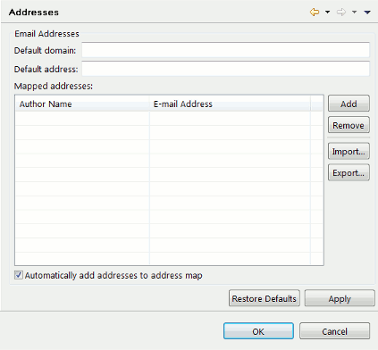

Preferences - Mail
This page allows you to configure the settings used to send e-mail.

The SMTP host is the name of the machine on which SMTP server is running. The SMTP port is the port on that machine that SMTP has been configured to listen to.
The username and password are used to authenticate with the SMTP server.
The from address is the return address used when sending e-mail.

The default domain is used to compose an e-mail address based on an author name taken from the Javadoc author tag.
The default address is the address to which reports will be sent concerning code for which an author is not known.
The table contains a mapping from author names to e-mail addresses. If an author name is not in this table, an attempt will be made to construct an e-mail address using the default domain. You can use the Add... and Remove buttons to edit the table.
The Import... and Export... buttons can be used to import and export the address information as an XML formatted address book. This can be used to share addresses between developers. An exported address book can also be referenced from the mailAuthors tag within the code audit Ant task.